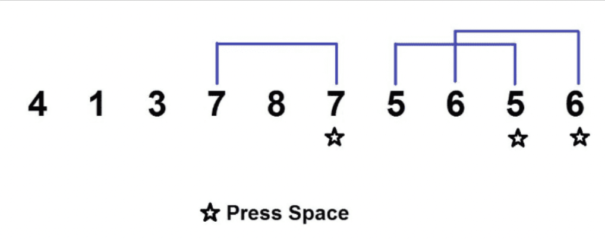

Numbers will be presented one at a time. Take note of them. If the number on the screen is the same as the number n numbers before, press the spacebar. For example, if n = 2:

On the following screen, a cross will be displayed for up to one minute. Stay still and just look at it without doing anything.